측량및지형공간정보산업기사 (2003-08-31 기출문제)
1과목: 응용측량
1. 그림과 같이 직경 1.2m 인 원형배수관에 하수가 0.9m 만큼 채워져 흐를 때의 배수단면적은?
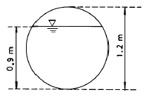
- 약 0.81m2
- 약 0.91m2
- 약 1.01m2
- 약 1.11m2
(정답률: 알수없음)

2. 축척 1:1200도상에서 삼각형의 세변을 측정한 결과 각각 23.5mm, 16.3mm, 20.2mm 이었다. 이 삼각형 토지의 실제면적은?
- 161.8m2
- 191.5m2
- 233.0m2
- 275.0m2
(정답률: 알수없음)
3. 저수지 용량을 산정하기 위한 방법으로 많이 사용되는 것은?
- 단면법
- 점고법
- 등고선법
- 유토곡선법
(정답률: 알수없음)
4. 다음과 같은 도로계획면을 만들고자 한다. 각 점의 좌표를 이용하여 단면의 넓이를 구하면 얼마인가?
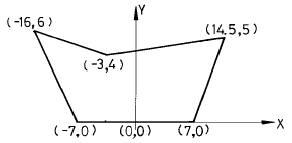
- 122.0m2
- 98.0m2
- 87.6m2
- 78.8m2
(정답률: 알수없음)
5. 노선의 곡률반경 R = 100m, 곡선장 L = 16m 일 때 클로소이드의 매개변수(Parameter)A의 값은?
- 40m
- 50m
- 60m
- 70m
(정답률: 알수없음)
6. 캔트의 계산에서 곡률 반경을 2배로 하면 캔트는 몇 배가 되는가?
- 1/2
- 1/4
- 1
- 2
(정답률: 알수없음)
7. 노선의 구간 No.18에서 No.18 + 17.4m 사이에 성토고 2m, 성토구배 1 : 1.5, 도로폭 20m 의 도로축조용 성토량은 몇 m3 인가?
- 400.2m3
- 452.4m3
- 800.4m3
- 904.8m3
(정답률: 알수없음)
8. 단곡선 설치에서 교각(I)=60° , 접선장(T.L)=210m이라면 곡선의 반지름은 얼마인가?
- 333.73m
- 343.73m
- 353.73m
- 363.73m
(정답률: 알수없음)
9. 반지름 500m의 원곡선에서 시단현 15m에 대한 편각은 얼마인가?
- 약 54' 34'
- 약 53' 34"
- 약 52' 34"
- 약 51' 34"
(정답률: 알수없음)
10. 하천측량에 이용되는 삼각망으로 가장 적합한 것은?
- 삼변측량망
- 유심삼각망
- 단열삼각망
- 단삼각망
(정답률: 알수없음)
11. 하천의 수면으로부터 수심의 2/10, 6/10, 8/10되는 곳의 유속이 각각 1.8m/s, 1.5m/s, 0.8m/s일 때 평균유속은 얼마인가?
- 1.1m/s
- 1.2m/s
- 1.4m/s
- 1.5m/s
(정답률: 알수없음)
12. 하천의 횡단면 직선내의 평균유속을 구하는데 2점법을 사용하는 경우 옳은 것은?
- 수저에서 수심의 1할, 9할의 점에 의한 유속을 측정하여 평균한다.
- 수저에서 수심의 2할, 8할의 점에 의한 유속을 측정하여 평균한다.
- 수저에서 수심의 3할, 7할의 점에 의한 유속을 측정하여 평균한다.
- 수저에서 수심의 4할, 6할의 점에 의한 유속을 측정하여 평균한다.
(정답률: 알수없음)
13. 경사가 60° 이고 사거리가 100m 인 사갱에서 수평각을 측정한 경우 시준선에 직각으로 10mm 의 시준오차가 생겼다면 수평각의 오차는 얼마인가?
- 21"
- 30"
- 35"
- 41"
(정답률: 알수없음)
14. 직선 터널 양쪽의 좌표가 A(120,60), B(240,70)이고 각각의 높이가 80m, 82m 일 때 이 터널의 경사거리는? (단, 단위는 m임)
- 120.12m
- 120.43m
- 125.44m
- 130.43m
(정답률: 알수없음)
15. 교량에 대한 경관에 대하여 잘못 설명한 것은?
- 교량의 경관상 역할은 교량이 경관의 주역인 경우로 조망의 대상이 되는 경우와 경관을 조망하는 기회를 주는 시점의 역할을 하는 경우로 나누어 볼 수 있다.
- 경관설계시 기능과 형태의 문제와 동시에 내적인 요청과 외적인 요청의 평형을 고려하여야 한다.
- 내적인 요청이란 교량에 요구되는 기능으로서 통행역학적 안정성, 내구성과 교량으로서의 미적요소를 만족하여야 한다는 것을 말한다.
- 외적인 요청은 교량이 설치되는 곳의 환경에 따르는 것이나 시설물을 경관적으로 설계할 때에는 내.외적 요청의 조화점을 구할 필요까지는 없다.
(정답률: 알수없음)
16. 경관측량의 분류에서 시각적인 요소에 의한 분류에 속하지 않는 것은?
- 초점
- 선
- 크기
- 위치
(정답률: 알수없음)
17. 터널작업에서 갱외 기준점 측량에 대한 다음 설명 중 옳지 않은 것은?
- 터널 입구 부근에 인조점(引照點)을 설치한다.
- 측량의 정확도를 높이기 위해 가능한 후시를 짧게 잡는다.
- 고저측량용 기준점은 갱구 부근과 떨어진 곳에 2개소 이상 설치하는 것이 좋다.
- 기준점을 서로 관련시키기 위해 기준점이 시통되는 곳에 보조삼각점을 설치한다.
(정답률: 알수없음)
18. 지하 500m에서 거리가 400m이었다면 지표에서의 거리는? (단, R=6,370km)
- 399.07m
- 400.03m
- 400.08m
- 400.10m
(정답률: 알수없음)
19. 다음 설명 중 완화곡선에 대한 정의가 가장 정확한 것은?
- 차량의 흐름을 완화시켜주기 위해 직선부와 곡선부 사이에 넣어주는 곡선
- 차량에 가해지는 힘을 완화시켜주기 위해 직선부와 곡선부 사이에 넣어주는 곡선
- 차량의 속도를 경감시켜주기 위해 직선부와 곡선부 사이에 넣어주는 곡선
- 차량의 속도를 증가시키기 위해 직선부와 곡선부 사이에 넣어주는 곡선
(정답률: 알수없음)
20. 하천측량시 대상이 되는 수애선(水涯線)에 대한 설명 중 틀린 것은?
- 수면과 하안(河岸)과의 경계선을 수애선이라 한다.
- 수애선은 하천 수위에 따라 변동하는 것으로 저수위에 의하여 정해진다.
- 수애선의 측량에는 심천측량에 의한 방법과 동시관측에 의한 방법이 있다.
- 심천측량에 의한 방법을 이용할 때에는 수위의 변화가 적은 시기에 심천측량을 행하여 하천의 횡단면도를 먼저 만든다.
(정답률: 알수없음)
2과목: 사진측량 및 원격탐사
21. 오른쪽에 적색, 왼쪽에 청색으로 인쇄된 사진을 역입체시 하기 위해서는 어떠한 안경을 사용하여야 하는가? (순서대로 왼쪽, 오른쪽)
- 적색, 적색
- 청색, 청색
- 적색, 청색
- 청색, 적색
(정답률: 알수없음)
22. 다음 용어에 대한 설명으로 옳은 것은?
- 블록(Block) : 촬영비행 진행방향으로 연속된 모델
- 스트립(Strip) : 촬영비행 횡방향으로 연속된 모델
- 모델(Model) : 중복된 한쌍의 사진에 의하여 입체시 되는 부분
- 주점기선길이 : 임의의 사진의 주점과 연직점과의 거리
(정답률: 알수없음)
23. 그림과 같은 종시차를 없애기 위하여 제2카메라(우측카메라)의 표정요소 가운데 어느 요소를 사용하면 좋은가?
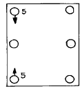
- Κ2
- ψ2
- ψ1
- ω2
(정답률: 알수없음)
24. 대지표정에 최소한도 필요로 하는 기준점의 수는?
- 2점의 (x, y)좌표와 4점의 z좌표
- 2점의 (x, y, z)좌표와 3점의 z좌표
- 2점의 (x, y)좌표와 2점의 z좌표
- 2점의 (x, y, z)좌표와 한점의 z좌표
(정답률: 알수없음)
25. 항공사진의 기복변위에 대한 설명으로 적당하지 않은 것은?
- 비행고도에 비례한다.
- 대상물에 기복이 있을 경우 발생하는 연직점 중심의 변위를 기복변위라 한다.
- 지형지물의 높이에 비례한다.
- 연직점으로부터 상점까지의 거리에 비례한다.
(정답률: 알수없음)
26. 기계좌표는 정밀좌표 측정기로 얻고 계산기에 의해 내부, 상호, 대지표정을 하는 항공삼각측정 기법은?
- 에어로 폴리곤법
- 독립 모델법
- 기계법
- 해석법
(정답률: 알수없음)
27. 지상기준점의 선점조건중 맞지 않는 것은?
- X, Y, H가 동시에 정확하게 결정할 수 있는 점이어야 한다.
- 시간적으로 변화하여도 무방하나 상공에서 보여야 한다.
- 사진상 명료한 점이어야 한다.
- 지표면에서 정확히 측정할 수 있는 점이어야 한다.
(정답률: 알수없음)
28. 비행고도 6,350m, 사진I의 주점기선장이 67mm, 사진II의 주점기선장이 70mm일 때 시차차 1.37mm의 벼랑의 비고는 얼마인가?
- 107m
- 117m
- 127m
- 137m
(정답률: 알수없음)
29. 지표면으로부터 7,500m의 촬영고도를 유지하고 찍은 축척 1/50,000의 사진지도가 있다. 사용한 광각 카메라의 초점거리는?
- 66mm
- 88mm
- 135mm
- 150mm
(정답률: 알수없음)
30. 카메라의 경사, 지표면의 비고를 수정하고 등고선이 삽입된 사진지도는?
- 중심투영 사진지도
- 정사투영 사진지도
- 조정집성 사진지도
- 약집성 사진지도
(정답률: 알수없음)
31. 고도 2,100m 상공에서 광각(초점거리=150mm)와 보통각(초점거리=210mm)의 카메라로 동시에 촬영할 때 지상에 있는 14m의 교량은 사진상에 각각 얼마로 나타나는가?
- 2.1mm, 1.5mm
- 1.0mm, 1.4mm
- 4.2mm, 2.8mm
- 0.1mm, 0.2mm
(정답률: 알수없음)
32. 입체상의 변화에 관한 내용으로 맞는 것은?
- 입체상은 촬영거리가 일정할 경우 촬영기선이 긴 경우가 짧은 경우보다 더 낮게 보인다.
- 입체상은 촬영거리가 일정할 경우 렌즈의 초점거리가 긴쪽의 사진이 짧은 쪽의 사진보다 더 낮게 보인다.
- 입체상은 눈의 위치가 정상위치보다 약간 높아짐에 따라 더 낮게 보인다.
- 입체상은 같은 사진기로 촬영기선이 같은 경우 촬영 거리가 긴 경우 더 낮게 보인다.
(정답률: 알수없음)
33. 다음은 대단위 지역을 항공사진 측량했을 때의 장점을 기술한 것이다. 옳지 않은 것은?
- 상대 정도가 높다.
- 경비가 저렴하고 공기가 짧다.
- 지상측량이 전혀 필요없다.
- 전체적으로 균일한 성과가 제공된다.
(정답률: 알수없음)
34. 항공사진용 사진기의 보통각 렌즈의 화각의 일반적인 크기는?
- 90°
- 80°
- 60°
- 50°
(정답률: 알수없음)
35. 원격측정자료변환 시스템의 체계를 바르게 나열한 것은? (단, A : 자료압축, B : 자료변환, C : 기하학적보정, D : 복사관측(radiometric) 보정, E : 판독 및 응용, F : 자료수집)
- F - B - D - C - A - E
- F - B - D - A - C - E
- F - A - B - D - C - E
- F - A - B - C - D - E
(정답률: 알수없음)
36. 사진측량은 4차원 측량이 가능한데 다음 중 4차원 측량에 해당하지 않는 것은?
- 거푸집에 대하여 주기적인 촬영으로 변형량을 계산한다.
- 동적인 물체에 대한 시간 별 움직임을 체크한다.
- 4가지의 각각 다른 구조물을 동시에 측량할 수 있다.
- 용광로의 열변형을 주기적으로 측정한다.
(정답률: 알수없음)
37. 항공사진의 촬영방법에 의한 분류 중 화면에 지평선이 찍혀 있는 사진을 무엇이라 하는가?
- 수직사진
- 고각도 경사사진
- 저각도 경사사진
- 수렴사진
(정답률: 알수없음)
38. 다음 원격측정의 작업내용 중 화상의 질을 높이거나 태양 입사각 등에 의한 영향을 보정해 주는 과정은 무엇인가?
- 자료변환(data handing)
- 복사관측(radiometric) 보정
- 기하학적(geometric) 보정
- 자료압축
(정답률: 알수없음)
39. 종횡중복도에 대한 설명으로 옳지 않은 것은?
- 항공사진에서 일반적인 종중복은 60%, 횡중복은 30% 이다.
- 종중복도는 최소 50% 이상, 횡중복도는 최소 5% 이상이어야 한다.
- 산악지역에서는 중복도를 높여 사각부를 없앤다.
- 대축척 지도제작시 기복변위량을 적게하기 위해 중복도를 감소시킨다.
(정답률: 알수없음)
40. 지상사진측량에서 촬영방법에 따른 분류에 해당되지 않는 것은?
- 직각수평촬영법
- 수렴수평촬영법
- 복각수평촬영법
- 편각수평촬영법
(정답률: 알수없음)
3과목: GIS 및 GPS
41. 기지삼각점을 이용하여 삼각측량을 할 경우 작업순서가 옳은 것은?
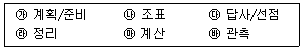
- ㉮→ ㉯→ ㉰→ ㉳→ ㉲→ ㉱
- ㉮→ ㉰→ ㉯→ ㉳→ ㉲→ ㉱
- ㉯→ ㉮→ ㉱→ ㉰→ ㉳→ ㉲
- ㉰→ ㉮→ ㉯→ ㉳→ ㉲→ ㉱
(정답률: 알수없음)
42. 표고 128.5m의 기지점 A에 평판을 정치하고 수평거리 83.6m 떨어진 B점에 수직으로 세운 목표판을 앨리데이드로 시준 하였더니 부각 눈금 10.5분획을 얻었다. B점의 표고는 얼마인가? (단, 기계높이 i=1.2m, 목표판 높이 f=2.5m로 한다.)
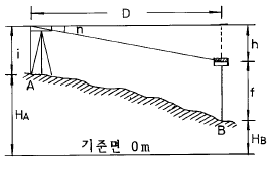
- 117.2m
- 118.4m
- 120.9m
- 121.0m
(정답률: 알수없음)
43. 평판측량에서 3m의 폴(pole)을 연직으로 세워서 상단과 하단을 앨리데이드로 측정하니 눈금차가 (+)5.0이었다. 평판과 폴(pole)과의 수평거리는?
- 40m
- 50m
- 60m
- 70m
(정답률: 알수없음)
44. 기선의 어떤 구간을 3회 측정하여 다음의 관측값을 얻었다. 최확값에 대한 확률오차와 정도로 옳은 것은?
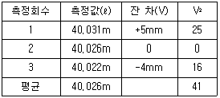
- 1.4632 ㎜ 1/52,000
- 1.5632 ㎜ 1/43,000
- 1.6632 ㎜ 1/32,000
- 1.7632 ㎜ 1/23,000
(정답률: 알수없음)
45. 방향각이 5" 틀리는 위치오차에서 4㎞의 목표물을 시준할 때 위치오차는?
- 8.1㎝
- 9.7㎝
- 11.5㎝
- 15.3㎝
(정답률: 알수없음)
46. 기포관의 감도가 20″ 인 레벨로 거리 100m 지점의 표척을 시준할 때 기포관에서 1/2 눈금의 오차가 있었다고 한다. 수준 오차는?
- 2.8mm
- 3.8mm
- 4.8mm
- 5.8mm
(정답률: 알수없음)
47. 그림과 같이 편각을 측정하였을 때
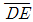
의 방위각은? (단, AB의 방위각 = 60° 임)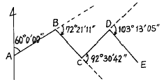
- 235° 34' 16"
- 143° 03' 34"
- 314° 34' 25"
- 140° 13' ⑤"
(정답률: 알수없음)
48. 평탄한 지역에서 13㎞ 떨어진 지점을 관측하려면 측표의 높이를 최소한 얼마로 하면 되는가? (단, 지구의 곡률반경은 6,370㎞ 이며, 광선의 굴절은 무시함)
- 1.52m
- 15.20m
- 1.33m
- 13.27m
(정답률: 알수없음)
49. 토지의 이용, 개발, 행정, 다목적 지적 등 토지자원에 관련된 문제 해결을 위한 정보분석체계는?
- 토지정보체계
- 지리정보체계
- 도시정보체계
- 측량정보체계
(정답률: 알수없음)
50. 스타디아측량은 다음 중 어느값을 알아야 원하는 결과를 얻을 수 있는가?
- 고저각과 경사거리
- 수평각과 고저각
- 고저각과 협장
- 협장과 수평각
(정답률: 알수없음)
51. 1회 측정시 발생하는 오차를 ± 0.01m라 하면 50회 연속 측정했을 때의 오차는?
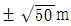
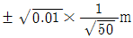
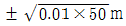
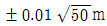
(정답률: 알수없음)
52. 벡터식 자료구조에 대한 설명 중 틀린 것은?
- 레스터식 자료구조보다 해상력이 떨어진다.
- 위치, 길이, 차원을 정확하게 표현할 수 있다
- 수학적인 좌표에 의하여 위치가 표시된다.
- 복잡한 자료를 최소한의 공간에 저장시킬 수 있다.
(정답률: 알수없음)
53. 하천이나 항만의 깊이를 표시할 때 일반적으로 사용하는 지형측량 방법은?
- 등고선법(等高線法)
- 음영법(陰影法)
- 점고법(點高法)
- 단채법(段採法)
(정답률: 알수없음)
54. 수준측량시 이기점에 대한 설명으로 가장 적합한 것은?
- 표척을 세워서 전시(FS)만 읽는 점
- 표고를 알고 있는 점에 표척을 세워 눈금을 읽은 점
- 표척을 세워서 후시(BS)와 전시(FS)를 읽는 점
- 장애물로 인하여 기계를 옮기는 점
(정답률: 알수없음)
55. 1등 삼각망내 어떤 삼각형의 구과량이 10″ 일 때 그 구면삼각형의 대략적인 면적은 얼마인가? (단, 지구의 평균곡률반경은 6,370㎞임)
- 1,000㎞2
- 1,500㎞2
- 2,000㎞2
- 2,500㎞2
(정답률: 알수없음)
56. 다음 중 격자형 자료(래스터 자료)의 압축방법이 아닌것은?
- 사슬부호(chain code)
- 연속분할부호(run-length code)
- 블록부호(block code)
- 포인트부호(point code)
(정답률: 알수없음)
57. 다음은 지형공간자료를 입력하는 단계이다. 이 중 맞게 표시된 것은?
- 비공간 속성자료의 입력 → 공간자료와 비공간자료의 연결 → 공간(위치)정보의 입력
- 공간자료와 비공간자료의 연결 → 공간(위치)정보의 입력 → 비공간 속성자료의 입력
- 공간(위치)정보의 입력 → 비공간 속성자료의 입력 →공간자료와 비공간자료의 연결
- 공간(위치)정보의 입력 → 공간자료와 비공간자료의 연결 → 비공간 속성자료의 입력
(정답률: 알수없음)
58. 다음 중 GPS의 위치 결정원리로 가장 타당한 것은?
- 관측점의 위치좌표가(x, y, z)이므로 2개의 위성에서 전파를 수신하여 관측점의 위치를 구한다.
- 위성궤도에 대해 종방향으로는 정사투영에 의해, 횡 방향으로는 중심투영에 의해 영상이 취득된 후 3차원 위치해석을 한다.
- 관측점 좌표(x, y, z)와 시간 t의 4차원 좌표의 결정방식으로 4개 이상의 위성에서 전파를 수신하여 관측점의 위치를 구한다.
- 레이저광 펄스를 이용하여 우주공간과의 관계를 감안하여 지상 관측점의 위치(x, y, z)를 구한다.
(정답률: 알수없음)
59. 삼각측량의 목적에 대해 가장 잘 설명한 것은?
- 점 위치를 결정하기 위한 것이다.
- 삼각형의 면적을 구하기 위한 것이다.
- 변길이를 구하기 위한 것이다.
- 기타 측량의 기준점을 확보하기 위한 것이다.
(정답률: 알수없음)
60. 다음 중 평판측량시 사용하는 장비가 아닌 것은?
- 앨리데이드(Alidade)
- 구심기 및 추
- 수준척(Staff)
- 삼각대
(정답률: 알수없음)
4과목: 측량학
61. 다음 설명 중 측량법상 용어의 정의가 잘못된 것은?
- 측량이라 함은 지표면, 지하, 수중 및 공간의 일정한 점의 위치를 측정하여 도면과 수치로 표시하는 것을 말한다.
- 지도라 함은 전산시스템을 이용하여 이를 분석, 편집 및 입· 출력할 수 있도록 제작된 수치지형도를 포함한다.
- 지도라 함은 수치지형도를 이용하여 특정한 주제에 관하여 제작된 지하시설물도와 토지이용현황도가 포함된다.
- 측량계획기관이라 함은 기본측량 및 공공측량 등 측량을 실시하는 자를 말한다
(정답률: 알수없음)
62. 다음 중 지도도식 규칙에 따르지 않아도 되는 경우는?
- 군사용 지도
- 기본측량의 성과로서 지도를 조제하는 경우
- 공공측량의 성과를 간접으로 이용하여 지도에 관한 간행물을 발간하는 경우
- 기본측량의 성과를 직접으로 이용하여 지도에 관한 간행물을 발간하는 경우
(정답률: 알수없음)
63. 기본측량의 측량성과 고시에 포함되는 사항이 아닌것은?
- 측량의 정확도
- 임시로 설치하는 측량표지의 수
- 측량성과의 보관장소
- 측량의 규모
(정답률: 알수없음)
64. 기본 측량 성과의 고시 및 보관은 누가 하는가?
- 측량심의회
- 국립지리원장
- 대한측량협회장
- 건설교통부장관
(정답률: 알수없음)
65. 측량의 기준중 회전타원체면상의 값으로 표시하여야 할 것은?
- 수준원점
- 경위도의 원점
- 거리와 면적
- 지구의 형상과 크기
(정답률: 알수없음)
66. 측량 심의회의 심의사항이 아닌 것은?
- 측량도서의 발간
- 공공측량에 관한 계획의 수립
- 공공측량 및 일반측량에서 제외되는 측량의 범위
- 측량기술의 연구발전
(정답률: 알수없음)
67. 1:50,000 지형도에 틱크(Tick)표시하는 직각좌표의 거리 단위는 몇 km 단위로 규정되어 있는가?
- 0.5km
- 1km
- 2km
- 4km
(정답률: 알수없음)
68. 수치지도의 보완에 있어서 공공측량계획기관은 당해기관에서 제작한 수치지형도 및 수치주제도에 대하여 몇 년마다 몇회 주기적으로 보완하여야 하는가?
- 수치지형도 : 1년마다 1회이상, 수치주제도 : 1년마다 1회이상
- 수치지형도 : 2년마다 1회이상, 수치주제도 : 2년마다 1회이상
- 수치지형도 : 2년마다 1회이상, 수치주제도 : 3년마다 1회이상
- 수치지형도 : 3년마다 1회이상, 수치주제도 : 3년마다 1회이상
(정답률: 알수없음)
69. 측량업자의 신고의무에 대한 설명으로 틀린 것은?
- 측량업자인 법인이 파산 또는 합병외의 사유로 해산한 때에는 그 청산인
- 측량업자가 폐업한 때에는 측량업자이었던 개인
- 측량업자가 사망한 때에는 그 상속인
- 측량업자가 폐업한 때에는 측량업자이었던 법인의 대표자
(정답률: 알수없음)
70. 지형도 도식적용규정에 포함되지 않는 사항은?
- 용어의 정의
- 각종기호의 적용방법
- 대공표지의 규격
- 지형지물의 표시방법
(정답률: 알수없음)
71. 다음 측량과 관련하여 설명이 잘못 된 것은?
- 공공측량의 측량성과는 측량협회장이 고시한다.
- 측량성과와 측량기록의 등초본 교부는 국립지리원장에게 신청한다.
- 시장, 군수 및 구청장은 관할구역 안에 있는 기본측량을 위하여 설치한 측량표를 감시하여야 한다.
- 기본측량은 국립지리원장이 실시하는 것이다.
(정답률: 알수없음)
72. 영구표지의 형상 중 1등 삼각점 반석의 평면 크기로 옳은 것은?
- 27㎝×27㎝
- 29㎝×29㎝
- 30㎝×30㎝
- 35㎝×35㎝
(정답률: 알수없음)
73. 기본측량의 성과를 외국으로 반출하고자 하는 경우 국외 반출허가신청서에 첨부하여야 할 서류가 아닌 것은?
- 보안각서
- 외국인인 경우 여권사본
- 반출할 내용물
- 내국인인 경우 호적등본
(정답률: 알수없음)
74. 1/50,000 지형도의 도식 규정에서는 경계를 특별시, 광역시, 도, 구, 시, 군, 읍 및 면계로 구분하여 표시의 원칙을 다음과 같이 규정하고 있다. 이중 옳지 않은 것은?
- 경계의 진위치와 기호의 중심선이 일치 하도록 표시한다.
- 경계가 중복될 때에는 그중 차상급 경계기호로서 표시한다.
- 경계가 도상 1.5㎜ 이상 폭의 진폭도로, 하천,용수로 등의 내측에 의존할 경우에는 그 중앙에 경계의 기호를 표시한다.
- 경계기호가 주기 및 독립기호와 교차할 때는 이들 부호의 아래 쪽으로 표시한다.
(정답률: 알수없음)
75. 측량업의 등록을 한자가 등록사항중 보유한 측량기술자의 변경이 있을때에는 그 변경이 있는날로 부터 며칠이내에 변경등록을 하여야 하는가?
- 7일
- 15일
- 30일
- 60일
(정답률: 알수없음)
76. 다음 중 측량업 등록을 할 수 있는 자는?
- 파산자로서 복권되지 아니한 자
- 금치산 또는 한정치산의 선고를 받은 자
- 1년 전에 측량업의 등록이 취소된자
- 금고이상의 형을 받고 3년이 경과된 자
(정답률: 알수없음)
77. 다음 중 수수료 징수사항이 아닌 것은?
- 지도등의 심사 신청
- 측량업의 등록증 및 등록수첩의 재교부 신청
- 측량성과 또는 측량기록의 열람
- 측량성과의 국외반출 허가신청
(정답률: 알수없음)
78. 다음 중 1년 이하의 징역 또는 300만원 이하의 벌금에처하는 사항으로 옳은 것은?
- 측량업의 등록증 및 등록수첩을 대여한 자와 그 상대방
- 정당한 사유없이 측량의 실시를 방해한 자
- 고의로 측량성과를 사실과 다르게 한 자
- 부정한 방법으로 측량업의 등록을 한 자
(정답률: 알수없음)
79. 기본측량을 위한 표지설치에 대한 설명으로 틀린 것은?
- 국립지리원장은 영구표지를 설치한 때에는 그 종류와 설치장소를 관계시· 도지사에게 통지하여야 한다.
- 시· 도지사는 표지설치의 통지를 받았을 때에는 지체없이 이를 시장· 군수 또는 구청장에게 통지하여야 한다.
- 영구표지설치의 통지는 그 측량성과를 함께 통지하여야 한다.
- 시장· 군수 또는 구청장은 매년 2회이상 관할구역안에 있는 영구표지 또는 일시표지의 현황을 조사하여야 한다.
(정답률: 알수없음)
80. 기본측량용역의 경우 측량기술자의 현장배치기준으로 옳은 것은?
- 초급기술자 3인 이상
- 중급기술자 2인 이상
- 고급기술자 1인 이상
- 고급기술자 1인, 중급기술자 2인 이상
(정답률: 알수없음)